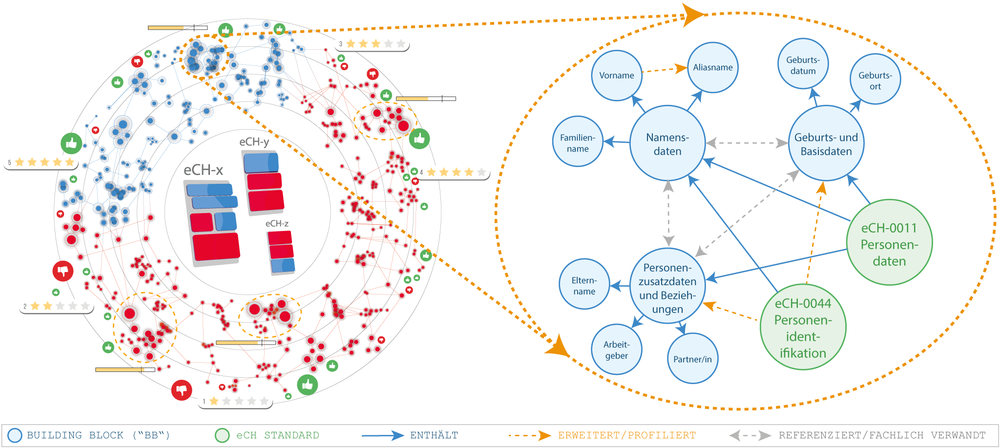

Exemplarischer BB-Graph
Die beiden Darstellungen zeigen auf unterschiedlichen Abstraktionsebenen, wie eCH-Standards in modulare Building Blocks (BBs) zerlegt und als Graph miteinander verknüpft werden könnten. Die dargestellten Inhalte und Beziehungen sind exemplarisch und dienen der Illustration des Konzepts.
Beziehungen zwischen Building Blocks
Der exemplarische BB-Graph zeigt einen Ausschnitt fachlicher Bausteine rund um die Personenidentifikation. Die Knoten stehen für Building Blocks; die Kanten machen ihre Abhängigkeiten und fachlichen Zusammenhänge sichtbar. Blaue, durchgezogene Pfeile kennzeichnen Referenzen beziehungsweise Aufbau-Beziehungen, orange gestrichelte Pfeile Erweiterungen oder Profilierungen und graue gepunktete Linien fachliche Verwandtschaften.

Vom Standardnetz zum einzelnen Datenpunkt
Die zweite Abbildung ordnet den exemplarischen Ausschnitt in eine grössere Vision ein. Links ist eine vernetzte Landschaft von Standards und Building Blocks dargestellt, ergänzt um mögliche Rückmeldungen und Bewertungen. Der vergrösserte Ausschnitt rechts zeigt, wie Standards wie eCH-0011 und eCH-0044 mit fachlichen Building Blocks und einzelnen Datenpunkten verbunden werden können. Der Zoom verdeutlicht damit den Übergang von dokumentzentrierten Standards zu einer modularen, maschinenlesbaren und navigierbaren Struktur.
